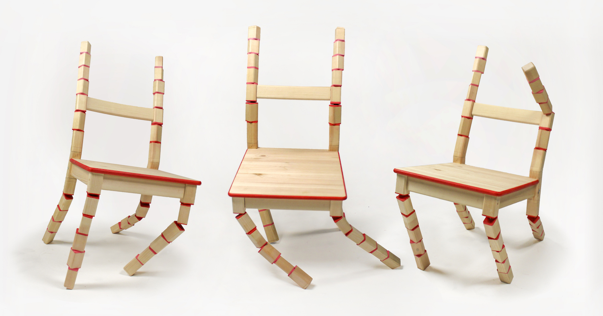
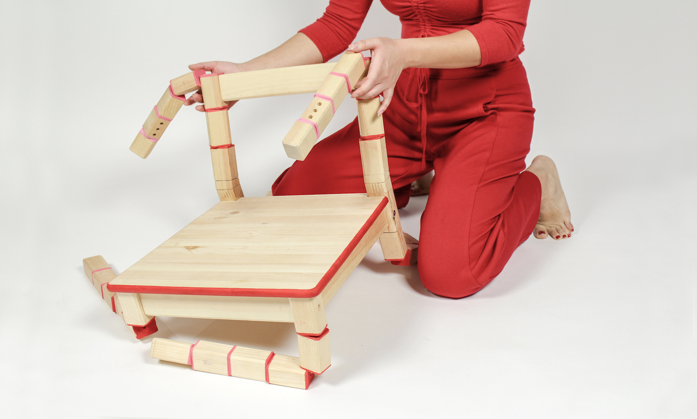
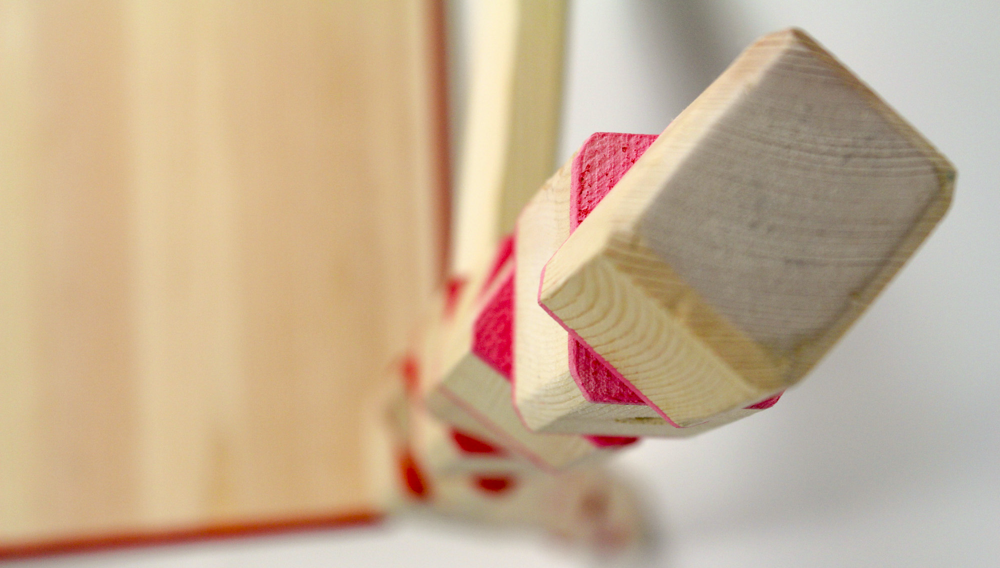

TITLE: Silla Borracha
PROJECT: Sculpture
YEAR: 2018
"Drunk Chair." A sculptural alteration to IKEA’s IVAR chair, in the style of a children's collapsing toy. The design gets its name from its instability—reminiscent of someone who has had one drink too many.
A collaboration with Maria Germer.



